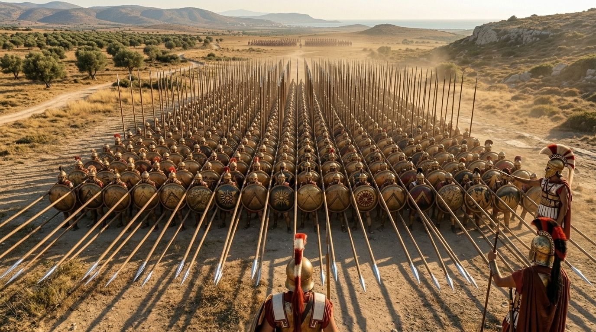

El Asedio de Tiro: Siete Meses de Obstinación
Tras la victoria en Issos en noviembre del 333 a.C., Alejandro Magno se encontró ante una encrucijada estratégica. Podría haber perseguido a Darío hacia el interior del Imperio Persa, siguiendo directamente al enemigo derrotado y buscando la batalla decisiva que terminara la guerra en meses. En cambio, eligió girar hacia el sur y avanzar por la costa de Fenicia, con el objetivo de neutralizar los puertos que seguían albergando la flota persa antes de internarse en Asia. Esta decisión lo llevaría al asedio más extraordinario de su carrera: el de la ciudad insular de Tiro, que duraría siete meses y requeriría una de las obras de ingeniería militar más audaces de la Antigüedad.
Tiro era en el siglo IV a.C. una de las ciudades más ricas y estratégicamente importantes del Mediterráneo oriental. Era la metrópoli fundadora de Cartago, el mayor centro comercial del Levante, y la sede de la industria de la púrpura tiria —el tinte más caro del mundo antiguo— que teñía los mantos de reyes y emperadores. Su riqueza provenía del comercio marítimo, y su supervivencia como ciudad independiente dependía de su posición: construida sobre una isla a aproximadamente ochocientos metros de la costa continental, con muros que en algunas partes alcanzaban los cuarenta y cinco metros de altura directamente sobre el mar. Era, literalmente, inexpugnable por medios convencionales.
Las Negociaciones Fracasadas
Alejandro llegó ante Tiro a principios del 332 a.C. y envió emisarios solicitando una rendición pacífica. Los tirios respondieron con una postura ambigua: reconocían la autoridad de Alejandro sobre el continente pero se negaban a dejarle entrar en la ciudad, invocando una tradición de neutralidad sagrada que supuestamente les eximía de alinearse con ninguna potencia. Era una respuesta calculada para ganar tiempo —los tirios esperaban que Darío enviara la flota fenicia para romper cualquier bloqueo macedónico— y Alejandro la interpretó correctamente como una negativa.
La situación era estratégicamente insostenible para Alejandro. Si dejaba Tiro a su espalda —con su formidable flota y su posición como base naval persa— y marchaba hacia el interior, se exponía a que los persas aprovecharan la ciudad para cortar sus comunicaciones con el Mediterráneo y eventualmente amenazar sus líneas de suministro. Tiro tenía que caer. El problema era cómo.
Con una flota insuficiente para bloquear efectivamente una isla bien aprovisionada, Alejandro tomó la decisión que sus ingenieros militares consideraron inicialmente imposible: construir una calzada —un molo— desde tierra firme hasta la isla. La distancia era de aproximadamente ochocientos metros sobre agua que en algunos puntos alcanzaba los seis metros de profundidad. Nadie en la historia militar había intentado algo semejante.

La Construcción del Molo
La construcción del molo comenzó con el derribo de la antigua Tiro continental —que había sido abandonada hacía años por sus habitantes que se habían trasladado a la isla— para usar sus piedras como base. Se clavaron estacas en el fondo marino, se rellenaron de piedras y tierra, y poco a poco la calzada comenzó a avanzar hacia la isla. En sus etapas iniciales, cuando el agua era poco profunda, el trabajo fue relativamente rápido. A medida que se adentraba en aguas más profundas, el problema se complicó exponencialmente.
Los tirios respondieron con una estrategia de acoso continuo. Sus trirremes —que podían moverse libremente alrededor del molo— atacaban a los trabajadores desde los flancos. Los arqueros y catapultas de las murallas hostigaban a los hombres que trabajaban en la punta del molo. Para proteger a sus ingenieros, Alejandro ordenó la construcción de dos torres de asedio móviles en la punta del molo, desde las cuales sus ballesteros podían responder al fuego enemigo.
Los tirios respondieron con un navío de fuego: un antiguo transporte de caballos cargado de material inflamable, que impulsaron contra las torres de asedio con el viento favorable y prendieron fuego justo antes de chocar. Las torres ardieron, el fuego se extendió al molo, y el trabajo de semanas quedó destruido. Fue el punto más bajo del asedio para Alejandro.
Lejos de rendirse, Alejandro amplió la anchura del molo —para que fuera más difícil de atacar desde los flancos— y comenzó a buscar una solución al problema naval. Visitó personalmente a los reyes de Sidón, Arados y otras ciudades fenicias que ya habían reconocido su autoridad, y les solicitó sus barcos. Chipre, que también estaba pasándose al bando macedónico, envió más de cien trirremes. De repente, Alejandro tenía una flota.
El Asalto Final
Con la flota macedónica bloqueando el puerto norte y el puerto sur de la isla, y el molo llegando cada vez más cerca de las murallas, la situación de Tiro empeoró dramáticamente. Los tirios intentaron una sortida naval que fue rechazada con pérdidas. Sus murallas, invencibles desde el mar, comenzaban a quedar al alcance de las torres de asedio instaladas en la punta del molo y en los barcos equipados con arietes.
El asalto final llegó en agosto del 332 a.C., siete meses después del comienzo del asedio. Las catapultas y arietes montados en barcos abrieron una brecha en el muro sur de la isla; simultáneamente, Alejandro dirigió personalmente la carga de los Hetairoi y la infantería de élite a través de la brecha. El combate dentro de la ciudad fue brutal —los tirios pelearon cada calle, cada casa—, pero el resultado ya no era dudoso. La ciudad cayó.
"El ingenio de Alejandro transformó lo imposible en inevitable. La calzada que construyó unió permanentemente la isla al continente; hoy Tiro es una península, y esa transformación geográfica es el monumento más duradero a su determinación."
— Peter Green, Alexander of Macedon, 1991
Las Consecuencias: Crueldad y Estrategia
La represalia de Alejandro sobre Tiro fue brutal y deliberada. Aproximadamente ocho mil tirios murieron en el asalto; otros treinta mil fueron vendidos como esclavos. Dos mil hombres en edad militar, acusados de haber matado a emisarios macedónicos durante el asedio, fueron crucificados en la playa. Fue uno de los actos más violentos de toda la campaña de Alejandro, y los historiadores lo interpretan como un mensaje calculado: las ciudades que resistían pagarían un precio más alto que las que se rendían.
Estratégicamente, la caída de Tiro fue un golpe decisivo para el dominio naval persa en el Mediterráneo oriental. Con Tiro capturada y las demás ciudades fenicias ya alineadas con Alejandro, la flota persa perdió sus bases de aprovisionamiento y mantenimiento. La amenaza naval persa —que hasta ese momento había sido el principal riesgo estratégico para las comunicaciones de Alejandro— se evaporó. El camino hacia Egipto quedaba abierto.
El molo que Alejandro construyó también tuvo consecuencias geológicas permanentes. Con el paso de los siglos, las corrientes marinas fueron depositando sedimentos a los lados de la calzada, ensanchándola gradualmente hasta que la antigua isla quedó conectada definitivamente al continente. La actual ciudad de Sur, en el Líbano, es una península en el lugar donde una vez hubo una isla, y esa transformación de la geografía local es el monumento más duradero —aunque involuntario— de la ingeniería militar de Alejandro Magno.
Fuentes y Referencias Científicas
- Arriano — Anábasis, Libro II.16-24, s. II d.C.
- Diodoro Sículo — Biblioteca Histórica, XVII.40-47
- Quinto Curcio Rufo — Historia de Alejandro, IV.2-4
- N.G.L. Hammond — Alexander the Great: King, Commander and Statesman, Noyes Press, 1980
Continúa leyendo
Batalla de Gaugamela: La Llanura Donde Cayó el Imperio Persa →